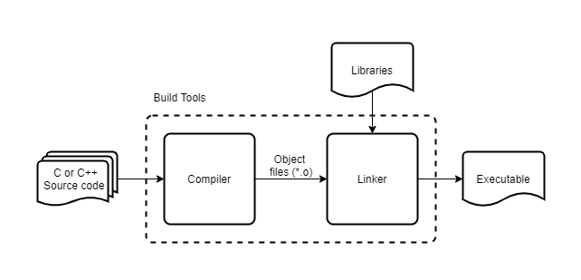
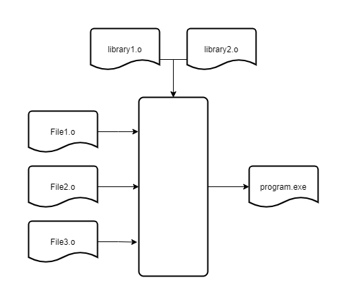

What Are Build Tools?
Build tools convert source code files into executable files. Building a program consists of two distinct processes.
Compilers
The compiler first verifies that the code follows the rules and conventions of the programming language. In this case, C or C++. If the code contains any syntax errors, the compiler will abort and print a message to the terminal that describes the nature and location of the errors.
The compiler then translates error-free code into machine language. Instructions in machine language control processor operations such as adding numbers and accessing data. Binary encoding makes the language interpretable by the processor. Relocatable object files store the translated code.
The example below shows same code in C, assembly language, and machine language (displayed as hexadecimal numbers). Assembly language is human-readable and its instructions are translated to machine language one-to-one. The two lines in the .data section of the assembly code wind up at the end of the machine code, while the top represents the .text section.
C
while (*dp++ = *sp++);Assembly Language
.data
src: .string "str"
dst: .string ""
.text
main: la a0, src
la a1, dst
strcpy: lb t0, 0(a0)
sb t0, 0(a1)
addi a0, a0, 1
addi a1, a1, 1
bnez t0, strcpyMachine Language
03000513
04000593
00050283
00558023
00150513
00158593
fe0298e3
0000007f
0
0
0
0
74206968
65726568Linker
The linker combines the object files with included libraries to create an executable file. This process includes placing code and data into memory, calculating label addresses and patching references. The linker will abort and print a message to the terminal if it identifies an error. The missing or duplicate definition of a function or variable causes most linking errors.
